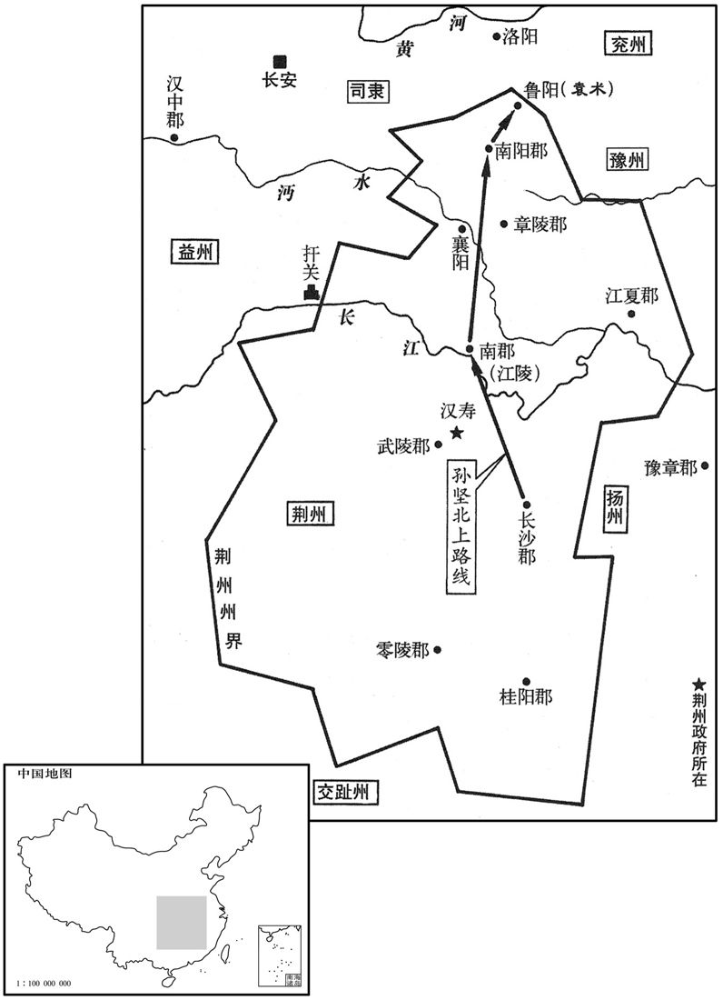
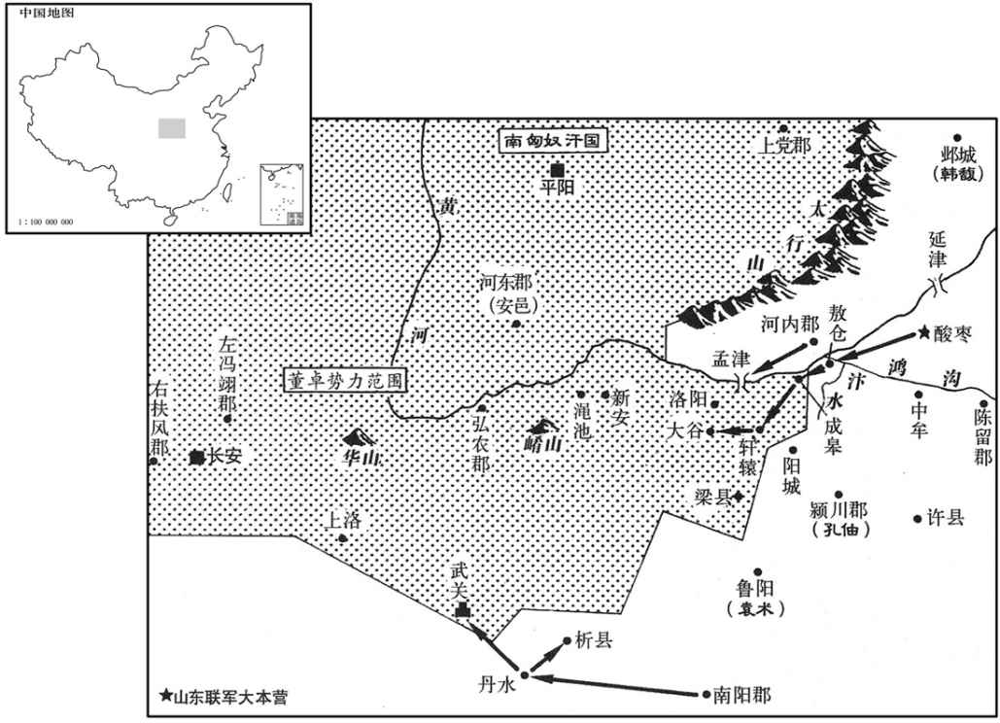

公元190年资治通鉴：本年记事、原文与白话对照
按原书编年位置阅读；追叙和史论不等于本年发生的事件。白话采用所据译本，缺译不以生成译文补齐。
卷59 · 本年记事
公元190年 · 汉孝献皇帝初平元年
初平元年〔（庚午、一九○）〕
上传原文的注释括号有异常，字符原样保留；无法可靠划分的段落默认全文显示。
本年事件索引（现代整理）
- 关东州郡推袁绍为盟主起兵，曹操独盼诸军进取
- 大赦
- 董卓派李儒毒杀弘农王刘辩
- 郑泰劝董卓勿大举征兵，称关东不足为惧
- 朱儁拒绝董卓任命，反对迁都
- 董卓强议迁都长安，杀谏阻的伍琼、周毖
- 董卓召盖勋、皇甫嵩入朝，二人未能举兵讨卓
- 董卓军队屠杀阳城百姓，劫掠妇女财物冒称战功
- 董卓胁迫百姓迁都，焚毁洛阳宫室并盗掘帝陵
- 董卓抵达长安，暂由王允处理朝政
- 董卓诛杀袁隗、袁基及袁氏宗族五十余人
- 孙坚杀害荆州刺史王叡、南阳太守张咨，联合袁术
- 刘表入荆州，招降宗贼、平定八郡
- 曹操率军西进，汴水战败后由曹洪救出
- 曹操批评酸枣诸军只饮酒不进兵，独自募兵屯河内
- 酸枣诸军粮尽离散，刘岱杀桥瑁，焦和治州无方
- 刘虞任太傅，宽政安民，收容百余万流民
- 荀爽去世，种拂任司空
- 袁绍杀害董卓派来调解关东的使者
- 董卓改铸小钱，造成物价飞涨
- 孙坚整军迎战董卓骑兵，董军见其军容严整而退
- 董卓突袭王匡，大破其军
- 蔡邕建议撤去汉和帝以来的庙号，朝廷采纳
- 公孙度任辽东太守，扩张辖地并自立为侯

本年形势与背景参考图

本年形势与背景参考图
春，正月，关东州郡皆起兵以讨董卓，推勃海太守袁绍为盟主；绍自号车骑将军，诸将皆板授官号。〔时卓挟天子，绍等罔攸禀命，故权宜板授官号。〕绍与河内太守王匡屯河内，冀州牧韩馥留邺，给其军粮。豫州刺史孔軎屯颍川，兖州刺史刘岱、陈留太守张邈、邈弟广陵太守超、东郡太守桥瑁、山阳太守袁遗、济北相鲍信与曹操俱屯酸枣，〔酸枣县属陈留郡。瑁，音冒。〕后将军袁术屯鲁阳，〔鲁阳县，属南阳郡。〕众各数万。豪桀多归心袁绍者；鲍信独谓曹操曰：「夫略不世出，能拨乱反正者，君也。苟非其人，虽强必毙。君殆天之所启乎！」
春季，正月，函谷关以东的各州、郡全都起兵讨伐董卓，推举勃海太守袁绍为盟主。袁绍自称车骑将军，诸将全都被临时授予官号。袁绍与河内郡太守王匡驻军河内、冀州牧韩留守邺城，供应军粮。豫州刺史孔驻军颖川，兖州刺史刘岱、陈留郡太守张邈、张邈的弟弟广陵郡太守张超、东郡太守桥瑁、山阳郡太守袁遗、济北国相鲍信和曹操都驻军酸枣，后将军袁术驻军鲁阳。各路军马都有数万人。各路豪杰多拥戴袁绍，只有鲍信对曹操说：“现在谋略超群，能拨乱反正的人，就是阁下了。假如不是这种人才，尽管强大，却必将失败。您恐怕是上天所派来的吧！”
辛亥，赦天下。
辛亥（初十），大赦天下。
癸酉，董卓使郎中令李儒酖杀弘农王辩。
癸酉（疑误），董卓派郎中令李儒用毒酒杀死了弘农王刘辩。
卓议大发兵以讨山东。尚书郑泰曰：「夫政在德，不在众也。」卓不悦曰：「如卿此言，兵为无用邪！」泰曰：「非谓其然也，以为山东不足加大兵耳。明公出自西州，少为将帅，闲习军事。〔少，诗照翻。〕袁本初公卿子弟，生处京师；张孟卓东平长者，坐不窥堂；〔处，昌吕翻。长，知两翻。张邈，字孟卓。贤曰：坐不窥堂，言不妄视也。〕孔公绪清谈高论，嘘枯吹生；〔孔軎，字公绪。贤曰枯者嘘之使之，生者吹之使枯，言谈论有所抑扬也。〕并无军旅之才，临锋决敌，非公之俦也。〔谓临兵锋而与敌人决胜负也。〕况王爵不加，尊卑无序，若恃众怙力，将各翆峙以观成败，不肯同心共胆，与齐进退也。〔此数语，公业虽以释言于卓，然关东诸将情态实不过如此。且山东承平日久，民不习战；关西顷遭羌寇，妇女皆能挟弓而，天下所畏者，无若并、凉之人与羌、胡义从；〔从，才用翻。〕而明公拥之以为爪牙，譬犹驱虎兕以赴犬羊，〔兕，序姊翻；似牛一角而青色，身重千斤，角重百斤。〕鼓烈风以扫枯叶，谁敢御之！无事征兵以惊天下，使患役之民相聚为非，弃德侍众，自亏威重也。」卓乃悦。
董卓准备大规模发兵去讨伐崤山以东地区。尚书郑泰说：“为政在于德，而不在于兵多。”董卓很不高兴地说：“照你这么讲，军队就没有用吗？”郑泰说：“我不是那个意思，而是认为崤山以东不值得出动大军讨伐。您在西州崛起，年轻时就出任将帅，熟飞军事。而袁绍是个公卿子弟，生长在京城；张邈是东平郡的忠厚长者，坐在堂上，眼睛都不会东张西望；孔中会高谈阔论，褒贬是非；这些人全无军事才能，临阵交锋，决不是您的对手。何况他们的官职都是自己封的，未得朝廷任命，尊卑没有次序。如果倚仗兵多势强来对阵，这些人将各自保存实力，以观成败，不肯同心合力，共进共退。而且崤山以东地区太平的时间已很长，百姓不熟悉作战，函谷关以西地区新近受过羌人的攻击，连妇女都能弯弓作战。无下人的畏惧，没有像对并州、凉州的军队作为爪牙，作起战来，犹如驱赶老虎猛兽去捕捉狗羊，鼓起强风去扫除枯叶，谁能抵抗！无事征兵会惊动天下，使得怕服兵役的人聚集作乱。放弃德政，而动用军队，是损害自己的威望。”董卓这才高兴。
董卓以山东兵盛，欲迁都以避之，公卿皆不欲而莫敢言。〔畏其暴也。〕卓表河南尹朱为太仆以为己副，使者召拜，辞，不肯受；因曰：「国家西迁，必孤天下之望，〔孤，负也。〕以成山东之衅，臣不知其可也。」使者曰：「召君受拜而君拒之，不问徙事而君陈之，何也﹖」曰：「副相国，非臣所堪也；迁都非计，事所急也。辞所不堪，言其所急，臣之宜也。」由是止不为副。
董卓认为崤山以东的军事联盟声势浩大，打算把京都由洛阳迁到长安进行躲避。公卿都不愿意，但没有敢说。董卓上表推荐河南尹朱俊为太仆，作为自己的副手，派使者去召朱俊接受任命。朱俊拒不接受，对使者说：“把京都向西迁徒，必然会使天下失望，反而给崤山以东的联军造成了机会，我认为不应该这样作。”使者说：“召您接受太仆的任命，而您拒绝了，没有问起迁都的事情，您却说了许多，这是为什么？”朱俊说：“作为相国的副手，是我所不能承担的重任；而迁都是失策，又很急迫。我拒绝无力承担的重任，说出认为是当务之急的事情，正是作臣子的本分。”因此，董卓不再勉强朱俊作自己的副手。
卓大会公卿议，曰：「高祖都关中，十有一世，光武宫雒阳，于今亦十一世矣。按石包谶，〔当时纬书之外，又有石包室谶，盖时人附益为之，如孔子闭房记之类。〕宜徙都长安，以应天人之意。」百官皆默然。司徒杨彪曰：「移都改制，天下大事，故盘庚迁亳，殷民胥怨。〔书序曰：盘庚五迁，将治亳，殷民咨胥怨。〕昔关中遭王莽残破，故光武更都雒邑，〔更，工衡翻。〕历年已久，百姓安乐，〔乐，音洛；下同。〕今无故捐宗庙，弃园陵，恐百姓惊动，必有糜沸之乱。〔贤曰：如糜粥之沸也。诗云：如沸如羹。〕石包谶，妖邪之书，岂可信用！」卓曰：「关中肥饶，故奏得并吞六国。且陇右材木自出，杜陵有武帝陶緖，并功营之，可使一朝而办。百姓何足与议！若有前却，我以大兵驱之，可令诣沧海。」〔贤曰：言不敢避险难也。〕彪曰：「天下动之至易，〔易，以豉翻。〕安之甚难，惟明公虑焉！」卓作色曰：「公欲沮国计邪！」太尉黄琬曰：「此国之大事，杨公之言，得无可思！」卓不答。司空荀爽见卓意壮，恐宪彪等，因从容言曰：〔从，千容翻。〕「相国岂乐此邪！〔乐，音洛。〕山东兵起，非一日可禁，故当迁以图之，此秦、汉之势也。」〔谓秦、汉都关中，因山河形势以制天下。〕卓意小解。琬退，又为驳议。〔驳，北角翻。〕二月，乙亥，卓以灾异奏免琬、彪等，以光禄勋赵谦为太尉，太仆王允为司徒。城门校尉伍琼、督军校尉周毖固谏迁都，卓大怒曰：「卓初入朝，二君劝用善士，故卓相从，而诸君到官，举兵相图，此二君卖卓，卓何用相负！」庚辰，收琼、毖，斩之。杨彪、黄琬恐惧，诣卓谢，卓亦悔杀琼、毖，乃复表彪、琬为光禄大夫。〔复，扶又翻。〕
董卓召集公卿商议迁都，说：“高祖建都关中，共历十一世；光武帝建都洛阳，到现在也是十一世了。按照《石包谶》的说法，应该迁都长安，以上应天意，下顺民心。”百官都默不作声。司徒杨彪说：“迁都改制，是天下大事。殷代盘庚迁都毫邑，就引起殷民的怨恨。从前关中地区遭到王莽的破坏，所以光武帝改在洛阳建都，历时已久，百姓安乐。现在无缘无故地抛弃皇家宗庙与先帝的陵园，恐怕会惊动百姓，定将导致大乱。《石包谶》是一本专谈妖邪的书，怎么能相信使用！”董卓说：“关中土地肥饶，所以泰国能吞并六国，统一天下。而且陇右地区出产木材，杜陵在武帝留下的烧制陶器的窑灶，全力经营，很快就能安顿好。跟百姓怎么值得商量，如果他们在前面反对，我以大军在后驱赶，可以让他们直赴沧海。”杨彪说：“动天下是很容易的，但再安天下就很困难了，愿您考虑！”董卓变脸说：“你要阻挠国家大计吗？”太尉黄琬说：“这是国家大事，杨公所说的，恐怕是可以考虑的。”董卓不答话。司空荀爽看见董卓已很生气，恐怕他要伤害杨彪等人，于是和缓地说：“难道相国是乐于这样做吗！崤山以东起兵，不是一天可以平定的，所以要先迁都，以对付他们。这正与秦朝和汉初的情况相同。”董卓怒气才稍平息。黄琬退下后，又上书反对迁都。二月，乙亥（初五），董卓以灾异为借口，上奏皇帝，免除黄琬、杨彪的职务。任命光禄勋赵谦为太尉，太仆王允为司徒。城门校尉伍琼、督军校尉周毖坚决劝谏，反对迁都，董卓大怒，说：“我初入朝，你们两个劝我选用良善之士，我听从了，而这些人到任后，都起兵反对我，这是你们两个人出卖我，我有什么对不起你们！”庚辰（初十），逮捕伍琼、周毖，将他们处斩。杨彪、黄琬恐惧，就到董卓那里谢罪。董卓也因杀死伍琼、周毖而感到后悔，于是上表推举杨彪、黄琬为光禄大夫。
卓征京兆尹盖勋为议郎；〔盖，古盍翻。〕时左将军皇甫嵩将兵三万屯扶风，〔潘岳关中记曰：三辅旧治长安城中，长吏各在其县治民；光武东都之后，扶风出治槐里，冯翊出治高陵。〕勋密与嵩谋讨卓。会卓亦征嵩为城门校尉，嵩长史梁衍说嵩曰：「董卓寇掠京邑，废立从意，今征将军，大则危祸，小则困辱。今及卓在雒阳，天子来西，以将军之众迎接至尊，奉令讨逆，征兵群帅，〔说，输芮翻。帅，所类翻。〕袁氏逼其东，将军迫其西，此成禽也！」嵩不从，遂就征。〔嵩前不能从兄子郦之言，今又不徒衍之策，自揣其才不足以制卓故也。〕勋以众弱不能独立，亦还京师。卓以勋为越骑校尉。河南尹朱为卓陈军事，卓折曰：「我百战百胜，决之于心，卿勿妄说，且污我刀！」〔为，于伪翻。折，之舌翻。污，乌故翻。〕盖勋曰：「昔武丁之明，犹求箴谏，〔贤曰：武丁，殷王高宗也，谓傅说曰：「启乃心，沃朕心。」说复于王曰：「惟木从绳则正，后从谏则圣。」余谓盖勋忠直之士，时卓方谋僭逆，不应以武丁之事为言。据国语，楚左史倚相曰：昔卫武公年数九十有五矣，犹箴儆于国曰：「毋谓我老耄而舍我，必恭恪于朝，朝夕以交戒我。闻一二之言，必诵志而纳之，以训道我。」及其没也，谓之叡圣武公。勋盖以卫武公之事责卓也。史书传写误以公为「丁」耳。〕况如卿者，而欲杜人之口！」乎卓乃谢之。
董卓征召京兆尹盖勋为议郎。这时左将军皇甫嵩统兵三万驻扎在扶风，盖勋秘密与皇甫嵩商议讨伐董卓。正在这时，董卓也征召皇甫嵩为城门校尉。皇甫嵩的长史梁衍向皇甫嵩建议说：“董卓在京城抢掠，随自己的心意废立皇帝。如今征召将军，大将有性命之忧，小则会受到羞辱。现在乘董卓在洛阳，天子到西方来，将军统率大军迎接皇帝，然后奉皇帝之命讨伐叛逆董卓，向各地将领征兵，袁绍等人在东边进攻，将军在西边夹击，这就能生擒董卓！”皇甫嵩没有采纳他的建议，接受了征召，动身去洛阳。盖勋因自己兵弱不能独立，也回到洛阳。董卓任命盖勋为越骑校尉。河南尹朱俊对董卓分析军事形势，董卓轻蔑地说：“我百战百胜，胸中自有主张。你不要胡说，否则你的血将玷污我的宝刀！”盖勋说：“从前武丁那样圣明的君王，还请求别人提建议，何况象您这样的人，竟要封住别人的嘴吗？”董卓于是表示歉意。
卓遣军至阳城，值民会于社下，〔此二月事也。阳城县属颍川郡。〕悉就斩之，驾其车重，〔重，直用翻。〕载其妇女，以头系车辕，歌呼还雒，云攻贼大获。卓焚烧其头，以妇女与甲兵为婢妾。〔甲兵，谓甲兵之士。〕
董卓派军队到阳城，正好百姓在祭祀土地神的场所集会。军队就当场把男人全部斩杀，用他们的车子，装载俘虏的妇女，把人头系在车辕上，唱着叫着回到洛阳，宣称：“攻击叛军，大获全胜！”董卓把人头烧掉，把妇女分给士兵做奴婢或妾。
丁亥，车驾西迁，董卓收诸富室，以罪恶诛之，没入其财物，死者不可胜计；〔胜，音升。〕悉驱徙其余民数百万口于长安，步骑驱蹙，更相蹈藉，〔藉，慈夜翻。〕饥饿寇掠，积尸盈路。卓自留屯毕圭苑中，悉烧宫庙、官府、居家二百里内，室屋荡尽，无复鸡犬。又使吕布发诸帝陵及公卿以下耱墓，收其珍宝。卓获山东兵，以潜膏涂布十余匹，用缠其身，然后烧之，先从�为_。
丁亥（十七日），献帝刘协西迁长安。董卓逮捕洛阳城中富豪，加以罪恶之名处死，把他们的财物没收，死者不计其数。驱赶剩下的数百万居民，都向长安迁徒。命步兵、骑兵在后逼迫，马踏人踩，互相拥挤，加上饥饿和抢掠，百姓不断死去，沿途堆满尸体。董卓自己留驻在毕圭苑中，命部下纵火焚烧一切宫殿、官府及百姓住宅，二百里内，房屋尽毁，不再有鸡犬。又让吕布率兵挖掘历代皇帝陵寝和公卿及以下官员的墓地，搜罗珍宝。董卓曾捉到一批山东兵，他命人用十余匹涂上猪油的布裹到这些山东兵的身上，然后从脚点火，将他们烧死。
三月，乙巳，车驾入长安，〔考异曰：袁纪作「己巳」，今从范书。居京兆府舍，师古曰：京兆府在尚冠前街，东入故中尉府。〕后乃稍葺宫室而居之。时董卓未至，朝政大小皆委之王允。允外相弥缝，内谋王室，甚有大臣之度，自天子及朝中皆倚允；允屈意承卓，卓亦雅信焉。〔朝，直遥翻。〕
三月，乙巳（初五），献帝到达长安，在京兆尹的府中住下。后将宫殿稍加修整，才搬入宫中。这时董卓还未到长安，朝中大小事务都交给司徒王允负责。王允在外补救缺失，在内为王室筹划，很有大臣风度，从天子到文武百官，都倚靠王允。王允对董卓曲意逢迎，而董卓也一直信任王允。
董卓以袁绍之故，戊午，杀太傅袁隗、太仆袁基，及其家尺口以上五十余人。〔尺口，谓婴孩也。〕
董卓因袁绍的缘故，戊午（十八日），杀死太傅袁隗、太仆袁基，及其袁家婴孩以上的五十余口。
初，荆州刺史王叡〔裴松之曰：叡，晋太保祥伯父也。与长沙太守孙坚共击零、桂贼，〔零、桂，零陵、桂阳也。〕以坚武官，言颇轻之。及州郡举兵讨董卓，叡与坚亦皆起兵。叡与坚亦皆起兵。叡素与武陵太守曹寅不相能，扬言当先杀寅。寅惧，诈作按行使者檄移坚说叡罪过，令收，行刑讫，以状上。〔上，时掌翻。〕坚承檄，即勒兵袭叡。叡闻兵至，登楼望之，遣问「欲何为﹖」坚前部答曰：「兵久战劳苦，欲诣使君求资直耳。」〔据吴录，资直者，衣资之直也。」叡见坚惊曰：「兵自求赏，孙府君何以在其中﹖」坚曰：「被使者檄诛君！」〔被，皮义翻。〕叡曰：「我何罪﹖」坚曰：「坐无所知！」叡穷迫，刮金饮之而死。〔陶弘景曰：生金有毒，不炼，服之杀人。〕坚前至南阳，众已数万人。南阳太守张咨不肯给军粮，坚诱而斩之；〔陈寿志曰：坚以牛酒诱之。吴历曰：坚诈疾以诱之。〕郡中震栗，无求不获。前到鲁阳，〔鲁阳县属南阳郡。〕与袁术合兵。术由是得据南阳，〔考异曰：范书术传云：「刘表上术为南阳太守。」表传云：「术阻兵屯鲁阳，表不得至荆州。魏志术传：「孙坚杀张咨，术得据南阳。」魏武帝纪，此年二月已云术屯南阳。盖术初奔鲁阳，此春孙坚取南阳，术乃据之，犹以鲁阳为治所也。〕表坚行破虏将军、领豫州刺史。
两版字句有差异，建议核对原文。
起初，荆州刺史王睿与长沙太守孙坚共同讨伐零陵、桂阳二郡的叛贼。王睿因孙坚是个武官，言语之中，很轻视他。及至各州、郡起兵计伐董卓时，王睿与孙坚也一同起兵。王睿一向与武陵太守曹寅互不相下，扬言要先杀死曹寅。曹寅害怕了，就伪造一份朝廷按行使者的公文给孙坚，宣布王睿的罪状，要孙坚拘捕王睿，行刑后，再把情况上报。孙坚得到这份公文，就率军袭击王睿。王睿听说孙坚部队到来，登上城楼眺望，派人前去询问：“你们要干什么？”孙坚的前锋部队回答说：“士兵长期征战，很辛苦，想面见刺史请求发给军饷。”王睿在楼上见到孙坚，大惊，问他：“士兵自来求赏，孙太守怎么也在其中？”孙坚说：“接到使者的公文，要处死你。”王睿说：“我犯了什么罪？”孙坚说：“你犯了‘无所知’的罪，”王睿被逼无奈，只好刮下金屑，吞饮而死。孙坚率军前进到南阳，部众已经有数万人。南阳太守张咨不肯供给军粮，孙坚将他诱出而斩杀。南阳郡中十分震恐，孙坚要什么就给什么。孙坚进军到鲁阳，与袁术合兵。袁术因此得以占领南阳，上表保奏孙坚代理破虏将军、兼豫州刺史。
诏以北军中候刘表为荆州刺史。时寇贼纵横，道路梗塞，〔纵，子容翻。塞，悉则翻。〕窗体马入宜城，〔贤曰：宗党共为贼。〕各拥众不附，若袁术因之，祸必至矣。吾欲征兵，恐不能集，其策焉出﹖」〔焉，于虔翻。〕蒯良曰：「众不附者，仁不足也；附而不治者，义不足也。苟仁义之道行，百姓归之如水之趣下，〔趣，七喻翻。〕何患征兵之不集乎！」蒯越曰：「袁术骄而无谋，宗贼帅多贪暴，为下所患，〔帅，所类翻；下同。〕若使人示之以利，必以众来。使君诛其无道，抚而用之，一州之人有乐存之心，〔乐，音洛。〕闻君威德，必襁负而至矣。〔襁，居两翻。〕兵集众附，南据江陵，北守襄阳，荆州八郡可传檄而定，〔郡国志：荆州部南阳、南郡、江夏、零陵、桂阳、长沙、武陵七郡。汉官仪以章陵足为八郡。〕公路虽至，无能为也。」〔袁术，字公路。〕表曰：「善！乃使越诱宗贼帅，至者五十五人，皆斩之而取其众。〔诱，音酉。帅，所类翻。〕遂徙治襄阳，〔荆州刺史本治武陵汉寿。襄阳县，属南郡。〕镇抚邵县，江南悉平。〔荆部在江南者，长沙、武陵、零陵、桂阳四郡也。为刘表专制荆州张本。〕
献帝下诏任命北军中候刘表为荆州刺史，当时遍地都是盗贼，阻断了道路。刘表单人匹马进入宜城，请来南郡的名士蒯良、蒯越，与他们商议说：“如今江南宗党势力十分强大，各自拥兵独立，假如袁术借助他们的力量乘机来攻，必然会大祸监头。我想征兵，但恐怕征集不起来，你们有什么高见！”蒯良说：“民众不归附，是宽仁不够；归附而不能治理，是恩义不足。只要施行仁义之道，百姓就会归附，像水向下流一样，为什么担心征集不到呢？”蒯越说：“袁术骄傲而缺乏谋略。宗党首领多贪残凶暴，部下离心离德，若让人显示好处，这些首领必然会率众前来。您把横行无道者处死，招扶收编他们的部下，州内百姓都想安居乐业，听说了您的威望和恩德，一定会扶老携幼，前来投奔。聚集兵众后，据守江陵和襄阳这南、北两处，荆州境内的八郡，发布公文就可平定。即使那时袁术来攻，也无计可施。”刘表说：“很好！”就派蒯越去引诱各宗党首领，有五十五个首领来到，刘表把他们全部处斩，吞并他们的部队。于是把州府移到襄阳，镇压安抚郡县，荆州属下的长江以南地区全部平定。
董卓在雒阳，袁绍等诸军皆畏其强，莫敢先进。曹操曰：「举义兵以诛暴乱，大众已合，诸君何疑！向使董卓倚王室，据旧京，东向以临天下，虽以无道行之，犹足为患。今焚烧宫室，劫迁天子，海内震动，不知所归，此天亡之时也，一战而天下定矣。」遂引兵西，将据成皋，张邈遣将卫兹分兵随之。进至荥阳汴水，〔班志：汴水在荥阳西南。〕遇卓将玄菟徐荣，〔菟，同都翻。〕与战，操兵败，为流矢所中，所乘马被创。〔中，竹仲翻。被，皮义翻。创，初良翻。〕从弟洪以马与操，操不受。〔从，才用翻。〕洪曰：「天下可无洪，不可无君！」遂步从操，夜遁去。荣见操所将兵少，力战尽日，谓酸枣未易攻也，〔易，以豉翻。〕亦引兵还。
董卓镇守洛阳，袁绍等各部队都畏惧董卓军力强盛，无人胆敢先行进攻。曹操说：“我们兴起义兵来诛除暴乱，大军已经集结，诸位还有什么迟疑！假如董卓倚仗皇帝的权威，据守洛阳，向东进军，尽管他凶残无道，也会成为我们的大患。如今他烧毁宫殿，强迫天子迁徒，全国震动，不知道该跟从谁，这正是上天赐予我们灭亡董卓的时机，一战就可以平定天下。”于是，曹操率军向西进发，准备攻占成，张邈拨出部分军队，派部将卫兹率领，随曹操一同进军。曹军行进到荥阳汴水，与董卓部将玄菟人徐荣的部队相遇，双方交战，曹军战败。曹操被流箭射中，所骑的马也受了伤。他的堂弟曹洪把马让给他，他不肯接受，曹洪说：“天下可以没有曹洪，不可以没有您！”于是曹操上马，曹洪步行跟从，乘着黑夜逃走。而徐荣见曹操虽然兵少，但奋战了一整天才败退，认为酸枣不容易攻破，也率军返回。
操到酸枣，诸军十余万，日置酒高会，不图进取，操责让之，因为谋曰：〔为，于伪翻；下同。〕「诸君能听吾计，使勃海引河内之众临孟津，〔勃海，谓袁绍也。〕酸枣诸将守成皋，据敖仓，塞轘辕、太谷，全制其险，〔塞，悉则翻。轘，音环。〕使袁将军率南阳之军军丹、析，入武关，〔此谓袁术也。丹水及析县皆属弘农郡。〕以震三辅，皆高垒深壁，勿与战，益为疑兵，示天下形势，以顺诛逆，可立定也。〔观操之计，但欲形格势禁，待其变起于下耳，非主于战也。〕今兵以义动，持疑不进，失天下望，窃为诸君耻之！」邈等不能用。操乃与司马沛国夏侯惇等诣扬州，募兵，得千余人，还屯河内。〔从袁绍也。〕
曹操回到酸枣，见到各路军马十余万，每天只是喝酒聚会，没人图谋进取。曹操责备他们，并建议说：“你们如能听从我的计划，请袁绍率领河内诸军进逼孟津，而驻扎酸枣的各位将领则据守成，占领敖仓，封锁辕、太谷，控制全部险要地区；请袁术率领南阳军阴进驻丹水、析县，攻入武关，以威胁三辅地区。各部队全都高筑营垒，坚守不战，多布置疑兵，显示出天下大军汇集的形势，然后名正言顺地讨征叛逆，可以很快平定局势。如今我们号称义兵，但一直迟疑不前，使天下人失望，我为大家感到羞耻！”张邈等不采纳他的建议。于是曹操与司马沛国人夏侯等到扬州去召募新兵，得一千余人，返回后驻扎在河内郡。
顷之，酸枣诸军食尽，众散。刘岱与桥瑁相恶，岱杀瑁，以王肱领东郡太守。青州刺史焦和亦起兵讨董卓，〔姓谱：周武王封神农之后于焦，后以国为氏。〕务及诸将西行，〔务进兵与酸枣诸将相及也。〕不为民人保障，兵始济河，黄巾已入其境。青州素殷实，甲兵甚盛，和每望寇奔北，未尝接风尘、交鼓也。性好卜筮，信鬼神，〔好，呼到翻。〕入见其人，清谈干云，出观其政，赏罚淆乱，州遂萧条，悉为丘墟。顷之，和病卒，袁绍使广陵臧洪领青州以抚之。
不久，驻在酸枣的各路军队因为粮食吃尽，兵众四散。兖州刺史刘岱与东郡太守桥瑁相互敌视，刘岱杀死桥瑁，任命王肱兼任东郡太守。青州刺史焦和也起兵讨伐董卓，想与各路将领会合，一道西征，没有保护本州人民的安全。他的军队刚开始渡黄河，黄巾军已进入了青州。青州地区一向富庶，军队装备很优良，但焦和每次作战都望风而逃，从来没有与敌人正面交过锋。他非常相信占卜，信奉鬼神。见面观察他，他长于高谈阔论，出来看他的政务，则赏罚不明。结果全州一派萧条景象，到处都是废墟。不久，焦和病死，袁绍派广陵人臧洪兼任青州刺史，安抚百姓。
夏，四月，以幽州牧刘虞为太傅，道路壅塞，〔塞，悉则翻。〕信命竟不得通。先是，幽部应接荒外，〔荒外，言荒服之外也。先，悉荐翻。〕资费甚广，岁常割青、冀赋调二亿有余以足之。〔调，徒吊翻。〕时处处断绝，委输不至，〔委，于伪翻。输，舂遇翻。〕而虞敝衣绳屦，食无兼肉，务存宽政，劝督农桑，开上谷胡市之利，通渔阳盐铁之饶，〔上谷旧有关市，与胡人贸易。渔阳旧有盐官、铁官。民悦年登，谷石三十，青、徐士庶避难归虞者百余万口，虞皆收视温恤，为安立生业，〔难，乃旦翻。为，于伪翻。〕流民皆忘其迁徙焉。
两版字句有差异，建议核对原文。
夏季，四月，任命幽州牧刘虞为太傅，因为道路阻断，使者和诏书无法到达。以前，由于幽州境外是边远地区，所需费用很多，每年都从青、冀二州所交的赋税中拨出两亿多钱，来补助幽州。这时，各地的联系都困战乱而断绝，补助也运不到。刘虞身披破旧认裳，脚穿草鞋，进餐时只吃一个肉菜，为政宽厚，劝导督促百姓从事农业、桑蚕业，开放上谷郡的胡市，与胡人交易取利，发展渔阳郡的盐、铁生产，使百姓欢悦，粮食丰收，每石谷价只有三十钱。青州、徐州的士人和百姓为了避难来投奔刘虞的达到一百余万人。刘虞将他们全部收留，加以安扶，为他们安家立业，使这些人都忘记自己是流亡在外。
五月，司空荀爽薨。六月，辛丑，以光禄大夫种拂为司空。拂，卲之父也。
五月，司空荀爽去世。六月，辛丑（疑误），任命光禄大夫种拂为司空。种拂是种邵的父亲。
董卓遣大鸿胪韩融、少府阴修、执金吾胡母班、将作大匠吴修、越骑校尉王緕安集关东，解譬袁绍等。胡母班、吴修，王緕至河内，袁绍使王匡悉收击〔【章：甲十一行本「系」；以太傅马十一行本同；退斋校同。】〕杀之。〔緕，工回翻。考异曰：谢承后传（衍）汉书曰：「班，王匡之妹夫。班与匡书云：『仆与公、太仆趟岐、少府阴修俱受诏命。关东诸郡，虽实娭卓，犹以衔奉王命，不敢玷辱。而足下独囚仆于狱，欲以衅鼓，此悖暴无道之甚者也！』按范书此年六月，遣韩融等安集关东，袁术、王匡各执而杀之。三年八月，遣马日磾及赵岐慰抚天下。袁纪，遣马、赵亦在三年八月，时董卓已死。而此书云与马、赵俱受诏，又云恚卓迁怒，自相乖迕。疑非班书。今不取。〕袁术亦杀阴修；惟韩融以名德免。
董卓派大鸿胪韩融、少府阴、执金吾胡毋班、将作大匠吴、越骑校尉王去招抚关东将领，劝说袁绍等人服从朝廷。胡毋班、吴、王走到河内，袁绍命令王匡把他们全都抓起来杀掉。袁术也杀死了阴，只有韩融因德高望重，免于一死。
董卓坏五铢钱，〔贤曰：光武中兴，除王莽货泉，更用五铢钱。孔颖达曰：五铢者，其重五铢，凡十桼为一絫，十絫为一铢，二十四铢为一两。钱边作五铢字。坏，音怪。〕更铸小钱，〔更，工衡翻。〕悉取雒阳及长安铜人、钟虡，飞廉、铜马、之属以铸之，〔铜人，秦始皇所铸也。贤曰：钟虡，以铜为之。前书音义曰：虡，鹿头龙身，神兽也。说文：钟鼓之跗，以猛兽为饰也。武帝置飞廉馆。音义曰：飞廉，神禽，身似鹿头，如爵，有角，蛇尾，文如豹文。明帝永平五年，迎取长安飞廉、铜马置上西门外，名平乐馆。铜马则东门京所作，置于金马门外者也。余据马授亦进铜马。虡，音巨。〕由是货贱物贵，谷石至数万钱。
董卓废除五铢钱，另铸小钱作为货币。把洛阳及长安所有的铜人、鹿头龙身铜像、雀头鹿身蛇尾铜像、铜马等都熔掉铸钱，从此钱贱物贵，物价猛涨，每石谷价高达数万钱。
冬，孙坚与官属会饮于鲁阳城东，董卓步骑数万猝至，坚方行酒谈笑，整顿部曲，无得妄动。后骑渐益，坚徐罢坐，〔坐，才卧翻。〕导引入城，乃曰：「向坚所以不即起者，恐兵相蹈藉，诸君不得入耳。」卓兵见其整，不敢攻而还。
冬季，孙坚与部下官员正在鲁阳城东饮酒聚会，董卓部下数万步、骑兵忽然来到。孙坚一边敬洒谈笑，一边整顿军队，不许轻举妄动。后来骑兵逐渐增多，孙坚才慢慢站起身。他率领大家入城后，才说：“刚才，我所以没有立即起身。是恐怕部队慌乱，互相拥挤，使你们无法入城。”董卓的军队看孙坚部伍严整，不敢进攻而退还。
王匡屯河阳津，〔河阳津，即孟津。〕董卓袭击，大破之。
王匡驻在河阳津，董卓派军袭击，大破王匡军队。
左中郎将蔡邕议「孝和以下庙号称宗者，皆宜省去，以遵先典；」从之。〔礼，祖有功而宗有德。和帝以下无德可宗，故去之。去，羌吕翻。考异曰：袁纪在明年。今从范书。
本段缺少可靠对应白话，原文完整保留；未使用生成译文。
中郎将徐荣荐同邵故冀州刺史公孙度于董卓，卓以为疗东太守。度到官，以法诛灭郡中名豪大姓百余家，郡中震栗，乃东伐高句骊，〔句，如字，又音驹。骊，力知翻。〕西击乌桓，语所亲吏柳毅、阳仪等曰：〔语，失倨翻。姓谱：柳，本自鲁孝公子子展之孙，以王父字为氏。至展禽，余采于柳下，因为氏。〕「汉炸将绝，当与诸卿图正〔【章：甲十一行本「正」作「王」；乙十一行本同；孔本同；熊校同。】〕耳。」于是分辽东为辽西、中辽郡，各置太守，越海收东莱诸县，置营州刺史。自立为辽东侯、平州牧，立汉二祖庙，承制，郊祀天地，藉田，〔杜佑曰：藉，借也，谓借人力以理之，劝率天下，使务农也。春秋传曰：郊而后耕，遂藉人力以成岁功，故谓之帝藉。臣瓒曰：亲耕以躬亲为义，不得以假借为称。藉，谓蹈藉也。师古曰：瓒说是。说文，帝藉千亩。藉奏昔翻。乘鸾路，设旄头、羽骑。〔羽骑，羽林骑也。〕
中郎将徐荣向董卓推荐同郡人、前冀州刺史公孙度，董卓任命他为辽东郡太守。公孙度到任后，依照法律处死郡中豪门大姓一百余家，全郡的人震惊战。于是他向东征伐高句骊，向西攻击乌桓部族。他对亲信官吏柳毅、阳仪等说：“汉朝的统治将要完结，我要和你们一同建立起一个王国。”于是分割辽东郡的一部分，设置辽西郡、中辽郡，各设太守。并渡海去占领东莱各县，设置营州，委派营州刺史。公孙度自称为辽东侯、平州牧，建立汉朝高祖刘邦和世祖光武帝刘秀的祭庙，代表皇帝发号施令，在郊外祭祀天地，并举行藉田之礼，以表示重视农业。他出入时乘坐皇帝使用的鸾车，设有旄头、由羽林骑士护卫。
译本中未与胡注本可靠对应的内容
以下另列供核对版本差异，不并入胡注本正文。
译本所附古文
[19]左中郎将蔡邕议：“孝和以下庙号称宗者，皆宜省去，以遵先典。”从之。
译本白话
左中郎将蔡邕提议：“孝和帝以后的皇帝，庙号称‘宗’的，都应该撤去，以遵循传统的典制。”献帝同意。